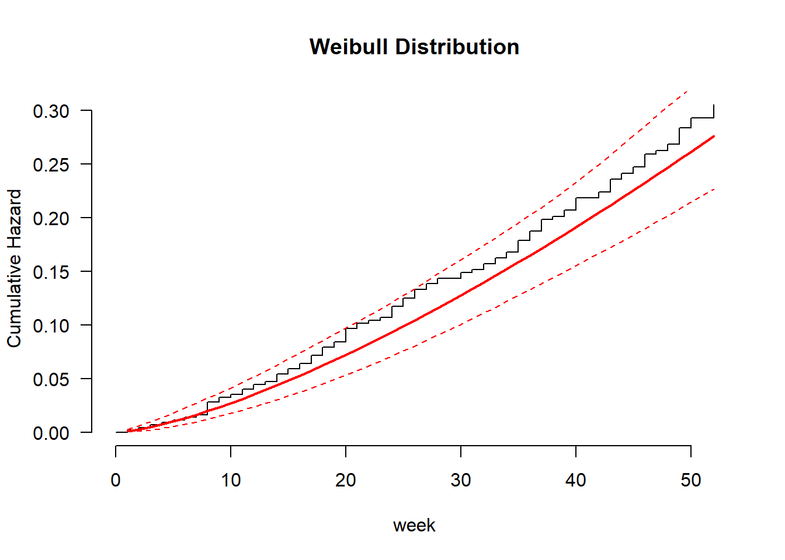

Chapter 3 Accelerated Failure Time models
The following R codes illustrate how to fit the Accelerated Failure Time models.
# Accelerated Failure Time Model
recid.aft.ln <- survreg(Surv(week, arrest) ~ fin + age + mar + prio, data = recid, dist = 'lognormal')
summary(recid.aft.ln)##
## Call:
## survreg(formula = Surv(week, arrest) ~ fin + age + mar + prio,
## data = recid, dist = "lognormal")
## Value Std. Error z p
## (Intercept) 4.0146 0.3897 10.30 < 2e-16
## fin 0.3319 0.1657 2.00 0.04524
## age 0.0333 0.0153 2.18 0.02959
## mar 0.5609 0.2928 1.92 0.05541
## prio -0.0743 0.0264 -2.82 0.00481
## Log(scale) 0.2723 0.0765 3.56 0.00037
##
## Scale= 1.31
##
## Log Normal distribution
## Loglik(model)= -685.5 Loglik(intercept only)= -697.9
## Chisq= 24.85 on 4 degrees of freedom, p= 5.4e-05
## Number of Newton-Raphson Iterations: 4
## n= 432## (Intercept) fin age mar prio
## 5439.988576 39.357426 3.386427 75.223685 -7.163067# Exponential vs. Weibull
recid.aft.w <- survreg(Surv(week, arrest) ~ fin + age + wexp + mar + paro + prio, data = recid, dist = 'weibull')
summary(recid.aft.w)##
## Call:
## survreg(formula = Surv(week, arrest) ~ fin + age + wexp + mar +
## paro + prio, data = recid, dist = "weibull")
## Value Std. Error z p
## (Intercept) 3.8086 0.3762 10.12 < 2e-16
## fin 0.2625 0.1376 1.91 0.05650
## age 0.0400 0.0159 2.51 0.01210
## wexp 0.1115 0.1516 0.74 0.46196
## mar 0.3389 0.2725 1.24 0.21366
## paro 0.0538 0.1394 0.39 0.69956
## prio -0.0646 0.0210 -3.08 0.00208
## Log(scale) -0.3383 0.0891 -3.80 0.00015
##
## Scale= 0.713
##
## Weibull distribution
## Loglik(model)= -680.5 Loglik(intercept only)= -696.6
## Chisq= 32.28 on 6 degrees of freedom, p= 1.4e-05
## Number of Newton-Raphson Iterations: 6
## n= 432# Checking Distributions
recid.aft.w <- flexsurvreg(Surv(week, arrest) ~ fin + age + wexp + mar + paro + prio, data = recid, dist = "weibull")
plot(recid.aft.w, type = "cumhaz", ci = TRUE, conf.int = FALSE, las = 1, bty = "n",
xlab = "week", ylab = "Cumulative Hazard", main = "Weibull Distribution")
recid.aft.e <- flexsurvreg(Surv(week, arrest) ~ fin + age + wexp + mar + paro + prio, data = recid, dist = "exp")
plot(recid.aft.e, type = "cumhaz", ci = TRUE, conf.int = FALSE, las = 1, bty = "n",
xlab = "week", ylab = "Cumulative Hazard", main = "Exponential Distribution")
recid.aft.g <- flexsurvreg(Surv(week, arrest) ~ fin + age + race + wexp + mar + paro + prio, data = recid, dist = "gamma")
plot(recid.aft.g, type = "cumhaz", ci = TRUE, conf.int = FALSE, las = 1, bty = "n",
xlab = "week", ylab = "Cumulative Hazard", main = "Gamma Distribution")
recid.aft.ll <- flexsurvreg(Surv(week, arrest) ~ fin + age + race + wexp + mar + paro + prio, data = recid, dist = "llogis")
plot(recid.aft.ll, type = "cumhaz", ci = TRUE, conf.int = FALSE, las = 1, bty = "n",
xlab = "week", ylab = "Cumulative Hazard", main = "Log-Logistic Distribution")
recid.aft.ln <- flexsurvreg(Surv(week, arrest) ~ fin + age + race + wexp + mar + paro + prio, data = recid, dist = "lognormal")
plot(recid.aft.ln, type = "cumhaz", ci = TRUE, conf.int = FALSE, las = 1, bty = "n",
xlab = "week", ylab = "Cumulative Hazard", main = "Log-Normal Distribution")# Goodness-of-Fit Tests
like.e = flexsurvreg(Surv(week, arrest) ~ fin + age + wexp + mar + paro + prio, data = recid, dist = "exp")$loglik
like.w <- flexsurvreg(Surv(week, arrest) ~ fin + age + wexp + mar + paro + prio, data = recid, dist = "weibull")$loglik
like.ln <- flexsurvreg(Surv(week, arrest) ~ fin + age + wexp + mar + paro + prio, data = recid, dist = "lnorm")$loglik
like.g = flexsurvreg(Surv(week, arrest) ~ fin + age + wexp + mar + paro + prio, data = recid, dist = "gamma")$loglik
like.ll = flexsurvreg(Surv(week, arrest) ~ fin + age + wexp + mar + paro + prio, data = recid, dist = "llogis")$loglik
like.f = flexsurvreg(Surv(week, arrest) ~ fin + age + wexp + mar + paro + prio, data = recid, dist = "genf")$loglik## Warning in .hess_to_cov(opt$hessian, hess.control$tol.solve,
## hess.control$tol.evalues): Hessian not positive definite: smallest eigenvalue
## is -4.2e+02 (threshold: -1.0e-05). This might indicate that the optimization
## did not converge to the maximum likelihood, so that the results are invalid.
## Continuing with the nearest positive definite approximation of the covariance
## matrix.pval.e.g = pchisq((-2*(like.e-like.g)), 2,lower.tail=F)
pval.w.g = pchisq((-2*(like.w-like.g)), 1,lower.tail=F)
pval.ln.g = pchisq((-2*(like.ln-like.g)), 1,lower.tail=F)
##pval.g.f = pchisq((-2*(like.g-like.f)), 1,lower.tail=F)
Tests = c('Exp vs. Gam', 'Wei vs. Gam', 'LogN vs. Gam')
P_values = c(pval.e.g, pval.w.g, pval.ln.g)
cbind(Tests, P_values)## Tests P_values
## [1,] "Exp vs. Gam" "0.00194259347065306"
## [2,] "Wei vs. Gam" "1"
## [3,] "LogN vs. Gam" "0.00767095999547838"# Predicted Survival Quantiles
recid.aft.w = survreg(Surv(week, arrest) ~ fin + age +prio, data = recid, dist = 'weibull')
summary(recid.aft.w)##
## Call:
## survreg(formula = Surv(week, arrest) ~ fin + age + prio, data = recid,
## dist = "weibull")
## Value Std. Error z p
## (Intercept) 3.7738 0.3581 10.54 < 2e-16
## fin 0.2495 0.1372 1.82 0.06901
## age 0.0478 0.0154 3.11 0.00189
## prio -0.0698 0.0201 -3.47 0.00051
## Log(scale) -0.3367 0.0892 -3.77 0.00016
##
## Scale= 0.714
##
## Weibull distribution
## Loglik(model)= -682 Loglik(intercept only)= -696.6
## Chisq= 29.17 on 3 degrees of freedom, p= 2.1e-06
## Number of Newton-Raphson Iterations: 6
## n= 432survprob.75.50.25 = predict(recid.aft.w, type = "quantile", se.fit = TRUE,p = c(0.25, 0.5, 0.75))
head(survprob.75.50.25$fit)## [,1] [,2] [,3]
## [1,] 52.68849 98.72758 161.95827
## [2,] 24.17956 45.30760 74.32514
## [3,] 17.89085 33.52383 54.99438
## [4,] 64.22717 120.34873 197.42682
## [5,] 35.95471 67.37185 110.52057
## [6,] 48.95457 91.73097 150.48064# Predicted Mean Event Time #
p.time.mean = predict(recid.aft.w, type = "response", se.fit = TRUE)
head(p.time.mean$fit, n = 10)## [1] 128.26394 58.86229 43.55317 156.35349 87.52751 119.17415 143.73152
## [8] 115.26040 81.92984 113.19494# Predicted Survival Probabilities #
survprob.actual = 1 - psurvreg(recid$week,
mean = predict(recid.aft.w, type = "lp"),
scale = recid.aft.w$scale, distribution = recid.aft.w$dist)
head(survprob.actual, n = 10)## [1] 0.9285822 0.8389085 0.6315234 0.8073231 0.6173609 0.7312118 0.9260438
## [8] 0.7203354 0.5891529 0.7143008survprob.10wk = 1 - psurvreg(10,
mean = predict(recid.aft.w, type = "lp"),
scale = recid.aft.w$scale,
distribution = recid.aft.w$dist)
head(survprob.10wk)## [1] 0.9723202 0.9198457 0.8803901 0.9789527 0.9531961 0.9693657# Predicted Change in Event Time #
new_time = qsurvreg(1 - survprob.actual,
mean = predict(recid.aft.w, type = "lp") +
coef(recid.aft.w)['fin'],
scale = recid.aft.w$scale,
distribution = recid.aft.w$dist)
recid$new_time = new_time
recid$diff = recid$new_time - recid$week
head(data.frame(recid$week, recid$new_time, recid$diff), n = 10)## recid.week recid.new_time recid.diff
## 1 20 25.66776 5.667764
## 2 17 21.81760 4.817600
## 3 25 32.08471 7.084706
## 4 52 66.73619 14.736188
## 5 52 66.73619 14.736188
## 6 52 66.73619 14.736188
## 7 23 29.51793 6.517929
## 8 52 66.73619 14.736188
## 9 52 66.73619 14.736188
## 10 52 66.73619 14.736188Let’s break down this code into smaller chunks to understand what is going on in each one…
3.1 Predict mean survival
In the survival regression, when we use the predict command (with nothing else), this is predicting the mean survival time. This means, on average when do we think the event will occur? For example, we will continue to use the recidivism data set with the Weibull distribution with the variables fin, age and prior. The following command will predict the mean time of the event occurring (only printing off a few to see).
recid.aft.w = survreg(Surv(week, arrest) ~ fin + age +prio, data = recid, dist = 'weibull')
head(predict(recid.aft.w))## [1] 128.26394 58.86229 43.55317 156.35349 87.52751 119.174153.2 Predict quantiles
But does it make sense to predict on average when we think an event will occur (or when an event will fail)? Probably not. Another approach would be to print the quantiles (for example the 25th, 50th and 75th quantile).
survprob.75.50.25 = predict(recid.aft.w, type = "quantile", se.fit = TRUE,p = c(0.25, 0.5, 0.75))
head(survprob.75.50.25$fit)## [,1] [,2] [,3]
## [1,] 52.68849 98.72758 161.95827
## [2,] 24.17956 45.30760 74.32514
## [3,] 17.89085 33.52383 54.99438
## [4,] 64.22717 120.34873 197.42682
## [5,] 35.95471 67.37185 110.52057
## [6,] 48.95457 91.73097 150.480643.3 Percentiles for an individual person
Did you know that from this regression, each observation has their own survival curve? That is why we can get quantiles (we can go the “opposite” direction and get percentiles too!). Below you will find the survival curve for person 1…
quant.prob=seq(0.05,0.95,by=0.05)
survprob = predict(recid.aft.w, type = "quantile", se.fit = TRUE,p = quant.prob)
surv.prob=rev(quant.prob)
graph.dat=data.frame(cbind(survprob$fit[1,],surv.prob))
colnames(graph.dat)=c("Tenure","SurvivalProb")
ggplot(graph.dat,aes(x=Tenure,y=SurvivalProb))+geom_line(color="blue")+labs(title="Survival Curve for Person 1",x="Tenure",y="Survival Probability")
3.4 Finding probabilities of a given value
We just predicted quantiles. We can go the opposite direction and find probabilities. To do this, the survreg function allows us to simply do psurvreg (we could have actually used qsurvreg for the previous piece in getting quantiles!!). Keep in mind that psurvreg is for the FAILURE probability (to get survival probabilities, we need to take 1-p, where p is the failure probability).
The below code finds the survival probability for each observed time! For example, person 1 was arrested on week 20 (where did that fall on their predicted survival curve?). Person 2 was arrested in week 17 (where did that fall on its predicted survival curve?).
survprob.actual = 1 - psurvreg(recid$week,
mean = predict(recid.aft.w, type = "lp"),
scale = recid.aft.w$scale, distribution = recid.aft.w$dist)
head(survprob.actual, n = 10)## [1] 0.9285822 0.8389085 0.6315234 0.8073231 0.6173609 0.7312118 0.9260438
## [8] 0.7203354 0.5891529 0.7143008We can also do this for a given point in time (say 10 weeks)….
survprob.10wk = 1 - psurvreg(10,
mean = predict(recid.aft.w, type = "lp"),
scale = recid.aft.w$scale,
distribution = recid.aft.w$dist)
head(survprob.10wk)## [1] 0.9723202 0.9198457 0.8803901 0.9789527 0.9531961 0.96936573.5 Python Code
Python Code to create and fit models:
Weibull model:
import pandas as pd
import numpy as np
import matplotlib.pyplot as plt
from lifelines import WeibullAFTFitter
recid = r.recid
recid1=recid[['fin','age','wexp','mar','paro','prio','week','arrest']]
aft = WeibullAFTFitter()
aft.fit(recid1, duration_col='week', event_col='arrest',ancillary=False )## <lifelines.WeibullAFTFitter: fitted with 432 total observations, 318 right-censored observations>## <lifelines.WeibullAFTFitter: fitted with 432 total observations, 318 right-censored observations>
## duration col = 'week'
## event col = 'arrest'
## number of observations = 432
## number of events observed = 114
## log-likelihood = -680.485
## time fit was run = 2026-01-09 17:24:55 UTC
##
## ---
## coef exp(coef) se(coef) coef lower 95% coef upper 95% exp(coef) lower 95% exp(coef) upper 95%
## param covariate
## lambda_ age 0.040 1.041 0.016 0.009 0.071 1.009 1.074
## fin 0.262 1.300 0.138 -0.007 0.532 0.993 1.703
## mar 0.339 1.403 0.273 -0.195 0.873 0.823 2.394
## paro 0.054 1.055 0.139 -0.219 0.327 0.803 1.387
## prio -0.065 0.937 0.021 -0.106 -0.023 0.900 0.977
## wexp 0.112 1.118 0.152 -0.186 0.409 0.831 1.505
## Intercept 3.809 45.086 0.376 3.071 4.546 21.569 94.241
## rho_ Intercept 0.338 1.403 0.089 0.164 0.513 1.178 1.670
##
## cmp to z p -log2(p)
## param covariate
## lambda_ age 0.000 2.509 0.012 6.368
## fin 0.000 1.907 0.056 4.146
## mar 0.000 1.244 0.214 2.227
## paro 0.000 0.386 0.700 0.515
## prio 0.000 -3.078 0.002 8.907
## wexp 0.000 0.736 0.462 1.114
## Intercept 0.000 10.124 <0.0005 77.620
## rho_ Intercept 0.000 3.797 <0.0005 12.736
## ---
## Concordance = 0.639
## AIC = 1376.971
## log-likelihood ratio test = 32.278 on 6 df
## -log2(p) of ll-ratio test = 16.080
Log Logistic model:
from lifelines import LogLogisticAFTFitter
aft = LogLogisticAFTFitter()
aft.fit(recid1, duration_col='week', event_col='arrest' )## <lifelines.LogLogisticAFTFitter: fitted with 432 total observations, 318 right-censored observations>## <lifelines.LogLogisticAFTFitter: fitted with 432 total observations, 318 right-censored observations>
## duration col = 'week'
## event col = 'arrest'
## number of observations = 432
## number of events observed = 114
## log-likelihood = -680.725
## time fit was run = 2026-01-09 17:24:56 UTC
##
## ---
## coef exp(coef) se(coef) coef lower 95% coef upper 95% exp(coef) lower 95% exp(coef) upper 95%
## param covariate
## alpha_ age 0.036 1.036 0.016 0.005 0.066 1.005 1.068
## fin 0.277 1.319 0.145 -0.008 0.562 0.992 1.754
## mar 0.373 1.453 0.271 -0.158 0.905 0.854 2.472
## paro 0.037 1.038 0.149 -0.255 0.330 0.775 1.391
## prio -0.066 0.936 0.023 -0.111 -0.022 0.895 0.978
## wexp 0.191 1.210 0.157 -0.118 0.500 0.889 1.648
## Intercept 3.691 40.069 0.383 2.939 4.442 18.906 84.920
## beta_ Intercept 0.432 1.540 0.087 0.262 0.602 1.300 1.825
##
## cmp to z p -log2(p)
## param covariate
## alpha_ age 0.000 2.289 0.022 5.500
## fin 0.000 1.903 0.057 4.133
## mar 0.000 1.377 0.169 2.568
## paro 0.000 0.249 0.803 0.316
## prio 0.000 -2.931 0.003 8.210
## wexp 0.000 1.213 0.225 2.150
## Intercept 0.000 9.630 <0.0005 70.507
## beta_ Intercept 0.000 4.993 <0.0005 20.685
## ---
## Concordance = 0.643
## AIC = 1377.450
## log-likelihood ratio test = 31.899 on 6 df
## -log2(p) of ll-ratio test = 15.839
Log Normal model:
from lifelines import LogNormalAFTFitter
aft = LogNormalAFTFitter()
aft.fit(recid1, duration_col='week', event_col='arrest' )## <lifelines.LogNormalAFTFitter: fitted with 432 total observations, 318 right-censored observations>## <lifelines.LogNormalAFTFitter: fitted with 432 total observations, 318 right-censored observations>
## duration col = 'week'
## event col = 'arrest'
## number of observations = 432
## number of events observed = 114
## log-likelihood = -684.206
## time fit was run = 2026-01-09 17:24:57 UTC
##
## ---
## coef exp(coef) se(coef) coef lower 95% coef upper 95% exp(coef) lower 95% exp(coef) upper 95%
## param covariate
## mu_ age 0.026 1.027 0.016 -0.005 0.057 0.995 1.059
## fin 0.330 1.391 0.164 0.008 0.652 1.008 1.919
## mar 0.481 1.618 0.296 -0.099 1.062 0.905 2.891
## paro 0.038 1.039 0.169 -0.294 0.370 0.745 1.448
## prio -0.062 0.939 0.027 -0.116 -0.009 0.891 0.991
## wexp 0.283 1.328 0.180 -0.068 0.635 0.934 1.888
## Intercept 3.973 53.147 0.409 3.172 4.774 23.852 118.424
## sigma_ Intercept 0.263 1.301 0.076 0.113 0.413 1.120 1.512
##
## cmp to z p -log2(p)
## param covariate
## mu_ age 0.000 1.663 0.096 3.375
## fin 0.000 2.006 0.045 4.479
## mar 0.000 1.624 0.104 3.261
## paro 0.000 0.225 0.822 0.283
## prio 0.000 -2.304 0.021 5.559
## wexp 0.000 1.579 0.114 3.127
## Intercept 0.000 9.719 <0.0005 71.761
## sigma_ Intercept 0.000 3.442 0.001 10.760
## ---
## Concordance = 0.644
## AIC = 1384.413
## log-likelihood ratio test = 27.408 on 6 df
## -log2(p) of ll-ratio test = 13.0083.6 Interesting application
To see the impact of the financial variable, we can look at those who did NOT have financial aid and what would they look like if they did have financial aid (impact of providing financial aid).
# Predicted Change in Event Time #
failprob.actual = psurvreg(recid$week,
mean = predict(recid.aft.w, type = "lp"),
scale = recid.aft.w$scale, distribution = recid.aft.w$dist)
head(survprob.actual, n = 10)## [1] 0.9285822 0.8389085 0.6315234 0.8073231 0.6173609 0.7312118 0.9260438
## [8] 0.7203354 0.5891529 0.7143008new_time = qsurvreg(failprob.actual,
mean = predict(recid.aft.w, type = "lp") +
coef(recid.aft.w)['fin'],
scale = recid.aft.w$scale,
distribution = recid.aft.w$dist)
recid$new_time = new_time
recid$diff = recid$new_time - recid$week
impact.fin=data.frame(recid$week, recid$new_time, recid$diff,recid$arrest,recid$fin)
colnames(impact.fin)=c("O.Week","N.Week","Diff","Arrest","Fin")
impact.fin2=subset(impact.fin,Arrest==1 & Fin==0)
head(impact.fin2)## O.Week N.Week Diff Arrest Fin
## 1 20 25.66776 5.667764 1 0
## 2 17 21.81760 4.817600 1 0
## 3 25 32.08471 7.084706 1 0
## 7 23 29.51793 6.517929 1 0
## 13 37 47.48536 10.485364 1 0
## 15 25 32.08471 7.084706 1 0